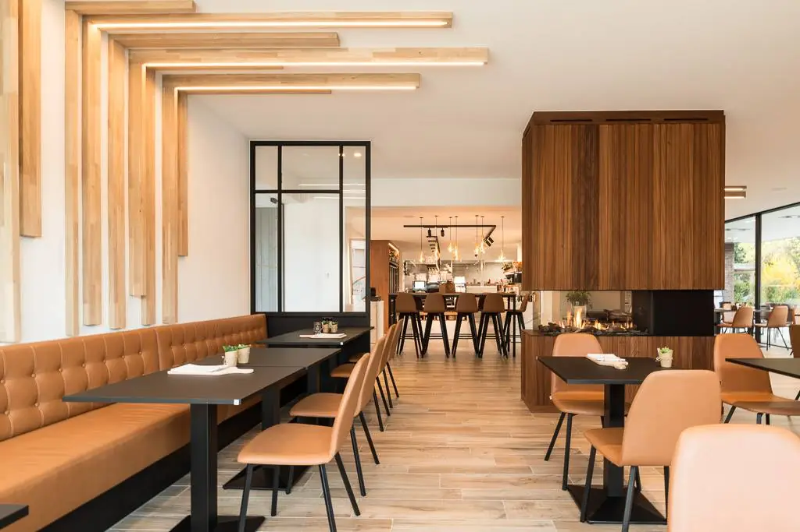

Broodbar Tastoe te Roeselare
Wij kregen het vertrouwen van onze klant Inside Decorations om de schilderwerken binnen deze nieuwe horecazaak op ons te nemen!


Bakkerij De Tassche omgedoopt tot Broodbar Tastoe
De bakkerij werd uitgebreid met een nieuwbouwgedeelte dat onderdak geeft aan een ruime degustatieruimte voor ontbijt, brunch en lunch. Het horecagedeelte fungeert ook als volwaardige tea-room in de namiddag. De oude winkel werd gestript en samen met het aangebouwde horecagedeelte omgedoopt tot 1 geïntegreerde foodbar waar je zowel de producten kan kopen als consumeren. Ook de speciaalbroden en koffiekoeken waarvoor bakkerij De Tassche bekend stond worden nog steeds verkocht aan de toonbank.
Ruime capaciteit
Er werd flink wat plaats gecreëerd voor de foodbar. Meer dan 60 zitplaatsen binnen en bijna evenveel op het overdekt en verwarmd terras. Er blijft voldoende ruimte zodat iedereen gemakkelijk kan circuleren, ook tijdens het ontbijtbuffet. De ruimte is toegankelijk voor mindervaliden.
Strakke look met een warme touch
De ruimte werd vrij strak ingericht. Hierdoor komen de producten goed tot hun recht. De gezelligheid werd toegevoegd door het gebruik van houten wandbekleding en houten verlichtingsbalken die over muren en plafonds lopen. De haard op ooghoogte zorgt voor extra warmte. Het winkelgedeelte waar de toonbanken en broodrekken staan en het horecagedeelte lopen vlot over in elkaar doordat de materialen mooi op elkaar werden afgestemd en doordat de looplijnen veel aandacht kregen.
In de foodbar ontstaat er spontaan een warme familale sfeer dankzij de vriendelijke service, de ambachtelijke producten en natuurlijk dankzij het weldoordachte decor van de hand van Inside!
Getuigenis
Zaakvoerder Sven Meulemeester Inside interior concepts:
De algemene doelstelling van Inside is om ervoor te zorgen dat elke betrokken partij een maximale voldoening haalt uit onze interieurprojecten en dit zowel voor, tijdens als na de afwerking ervan. Om dit te bereiken vinden we het zeer belangrijk dat we op een continue basis samenwerken met een hechte groep van aannemers. We werken daarom met een kern van voorkeur aannemers die systematisch in aanmerking komen voor onze interieurprojecten. Schilderwerken SDAD maakt deel uit van deze beperkte selectie!
Sfeerbeelden
Alle realisatiesSfeerbeelden


Een mooi resultaat begint met een goed gesprek.
Tijdens een vrijblijvend plaatsbezoek luisteren we naar uw wensen, geven we professioneel advies en bekijken we samen de mogelijkheden voor uw schilderwerken of interieurafwerking.
Na het vrijblijvende plaatsbezoek ontvangt u een duidelijke offerte en planning. Liever eerst een vraag stellen? Contacteer ons.